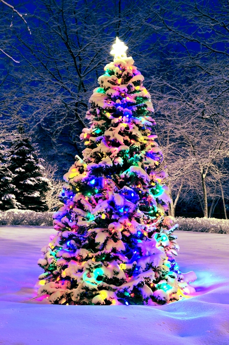

Mam nadzieję, że spędzisz tu miło czas i dowiesz się wielu ciekawych rzeczy o Świętach Bożego Narodzenia.
A teraz, zanim przejdziesz dalej, przywitaj się ze Świętym Mikołajem!
Ho ho ho! Witam Cię serdecznie na tej wspaniałej stronie. Jestem Święty Mikołaj i mam dla Ciebie mnóstwo prezentów. Ale zanim je otrzymasz, musisz wykonać kilka zadań. Gotowy? To zaczynajmy!
Kolędy to tradycyjne pieśni śpiewane podczas Świąt Bożego Narodzenia. Mają one na celu wyrazić radość z narodzin Jezusa Chrystusa i przekazać życzenia pokoju i dobra. Oto kilka popularnych kolęd, które możesz posłuchać lub zaśpiewać:
Cicha noc - to najbardziej znana kolęda na świecie, która powstała w Austrii w 1818 roku. Jej słowa napisał ks. Joseph Mohr, a muzykę skomponował Franz Xaver Gruber. Możesz posłuchać jej tutaj:
Bóg się rodzi - to polska kolęda z XVIII wieku, której słowa napisał Franciszek Karpiński, a muzykę skomponował Michał Marcin Mioduszewski. Możesz posłuchać jej tutaj:
Lulajże Jezuniu - to polska kołysanka z XVII wieku, która jest śpiewana jako kolęda. Jej autor jest nieznany. Możesz posłuchać jej tutaj: .
Jingle Bells - to amerykańska kolęda z XIX wieku, której słowa i muzykę napisał James Lord Pierpont. Jest to jedna z najbardziej rozpoznawalnych i wesołych kolęd na świecie. Możesz posłuchać jej tutaj:
Przepisy
Święta Bożego Narodzenia to także czas smakowania pysznych potraw i ciast. Możesz samodzielnie przygotować niektóre z nich, korzystając z prostych przepisów. Oto kilka propozycji takich przepisów, które możesz wypróbować:
Barszcz czerwony z uszkami - to tradycyjna zupa, która jest podawana na wigilijnym stole. Uszka są małymi pierożkami z farszem grzybowym lub kapustno-grzybowym. Aby przygotować barszcz czerwony z uszkami, potrzebujesz następujących składników:
1 kg buraków
2 marchewki
1 pietruszka
1 seler
1 cebula
4 ząbki czosnku
2 liście laurowe
4 ziarna ziela angielskiego
sól, pieprz, cukier, ocet do smaku
ciasto na pierogi
farsz grzybowy lub kapustno-grzybowy
Aby przygotować barszcz czerwony z uszkami, wykonaj następujące kroki:
Obierz i umyj buraki, marchewkę, pietruszkę, seler i cebulę. Pokrój je na kawałki i włóż do dużego garnka. Zalej wodą i gotuj na małym ogniu przez około 2 godziny.
Dodaj do garnka czosnek, liście laurowe, ziele angielskie, sól, pieprz, cukier i ocet. Gotuj jeszcze przez około 15 minut.
Przecedź barszcz przez sitko, odstaw warzywa. Możesz je zjeść osobno lub zblendować i dodać do barszczu.
Przygotuj uszka z ciasta na pierogi i farszu grzybowego lub kapustno-grzybowego. Możesz użyć gotowego ciasta i farszu lub zrobić je samodzielnie. Uformuj małe pierożki i gotuj je w osolonej wodzie przez około 5 minut.
Podawaj barszcz czerwony z uszkami na ciepło. Możesz posypać je natką pietruszki lub koperkiem.
Karp po żydowsku - to tradycyjna potrawa, która jest podawana na wigilijnym stole. Karp jest pieczony w sosie z cebuli, rodzynek, migdałów i przypraw. Aby przygotować karpia po żydowsku, potrzebujesz następujących składników:
1 karp o wadze około 1,5 kg
1 kg cebuli
100 g rodzynek
100 g migdałów
2 łyżki mąki
2 łyżki masła
2 łyżki octu
2 łyżki cukru
sól, pieprz, majeranek, cynamon, goździki do smaku
Aby przygotować karpia po żydowsku, wykonaj następujące kroki:
Obierz i pokrój cebulę w piórka. Podsmaż ją na maśle na patelni, aż się zeszkli.
Dodaj do cebuli rodzynki, migdały, cukier, ocet, sól, pieprz, majeranek, cynamon i goździki. Duś wszystko razem na małym ogniu przez około 15 minut, aż powstanie gęsty sos.
Oczyść i umyj karpia. Pokrój go na porcje i oprósz mąką. Usmaż karpia na złoty kolor na patelni z masłem.
Przełóż karpia do naczynia żaroodpornego i polej sosem z cebuli. Piecz w piekarniku nagrzanym do 180 stopni C przez około 30 minut.
Podawaj karpia po żydowsku na ciepło lub na zimno, według uznania.
Makowiec - to tradycyjne ciasto, które jest pieczone na Święta Bożego Narodzenia. Makowiec składa się z ciasta drożdżowego i nadzienia z maku, bakalii i przypraw. Aby przygotować makowiec, potrzebujesz następujących składników:
500 g mąki pszennej
25 g świeżych drożdży
125 g masła
100 g cukru
2 jajka
szczypta soli
250 ml mleka
500 g maku
100 g rodzynek
100 g bakalii (np. orzechy, migdały, skórka pomarańczowa)
50 g miodu
1 łyżka cukru waniliowego
sól, pieprz, cynamon, kardamon, gałka muszkatołowa do smaku
1 żółtko do posmarowania
Aby przygotować makowiec, wykonaj następujące kroki:
Rozkrusz drożdże w misce i wymieszaj je z łyżką cukru i łyżką mąki. Zalej ciepłym mlekiem i odstaw w ciepłe miejsce na około 15 minut, aż zacznie pracować.
W dużej misce wymieszaj resztę mąki, cukru i soli. Dodaj masło i zagnieć ciasto. Dodaj jajka i zaczyn drożdżowy. Wyrabiaj ciasto przez około 10 minut, aż będzie gładkie i elastyczne. Przykryj ściereczką i odstaw w ciepłe miejsce na około godzinę, aż podwoi swoją objętość.
Zalej mak wrzątkiem i odstaw na około 30 minut, aż zmięknie. Odcedź mak i zmiel go w maszynce lub blenderze. Dodaj do niego rodzynki, bakalie, miód, cukier waniliowy i przyprawy. Wymieszaj wszystko dokładnie.
Podziel ciasto na dwie części. Rozwałkuj każdą część na prostokąt o grubości około 0,5 cm. Rozłóż równomiernie nadzienie makowe na ciastach, zostawiając wolne brzegi. Zwiń ciasta w rolady, zaczynając od dłuższego boku. Złóż brzegi do środka, aby nadzienie nie wypływało.
Przełóż rolady na blachę wyłożoną papierem do pieczenia. Posmaruj je roztrzepanym żółtkiem. Piecz w piekarniku nagrzanym do 180 stopni C przez około 40 minut, aż będą rumiane.
Podawaj makowiec na ciepło lub na zimno, według uznania.
Galeria
Święta Bożego Narodzenia to czas pełen magii i uroku. Można go uchwycić na pięknych zdjęciach, które pokazują różne aspekty świątecznej atmosfery. Oto kilka przykładów takich zdjęć, które znalazłem w internecie:

Choinka ozdobiona kolorowymi bombkami i światełkami
Prezenty ułożone pod choinką
Bałwan z marchewką jako nosem i kapeluszem na głowie
Pierniczki w kształcie gwiazdek, serc i choinek
Sanie ciągnięte przez renifery z Mikołajem na pokładzie
Świeca zapalona na stole z gałązkami i ozdobami
Kontakt
Jeśli podoba Ci się moja strona świąteczna, chcesz podzielić się swoją opinią lub masz jakieś pytania, skontaktuj się ze mną. Oto moje dane kontaktowe:
Imię: Bing
E-mail: bing@bing.com
Telefon: +48 123 456 789
Możesz też śledzić mnie na mediach społecznościowych: